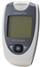

Arkray USA (formerly Hypoguard)
| Meter | Multisite | Sample Size | Test Time | Memory | Strips | Software | |
| Advance Microdraw® | No | 1.5 microliters | 15 secs | 250 test | Advance Test Strips - |
Yes | |
| Advance Intuition® | |
No | 3.0 microliters | 10 secs | 10 test | Advance Intutition | Yes |
| Assure II | -- | 3.0 microliters | 30 secs | -- | Assure II Test Strips | -- | |
| Assure 3 | |
-- | 3.0 microliters | 10 secs | -- | Assure 3 Test Strips | -- |
| Assure 4 | |
-- | 1.5 microliters | 10 secs | 50 test | Assure 4 Test Strips | -- |
| Assure Pro |  | -- | 1.0 microliters | 10 secs | 250 test | Assure Pro Test Strips | -- |
| PocketChem EZ | -- | 1.0 microliters | 10 secs | 250 test | PocketChem EZ Test Strips | -- | |
| Quicktek® | No | 3.5 microliters | 15 secs | 250 test | Quicktek Test Strips - |
Yes | |
| Supreme Plus® | |
No | ----- | 30-60 secs | 70 test | Supreme Plus Test Strips | No |